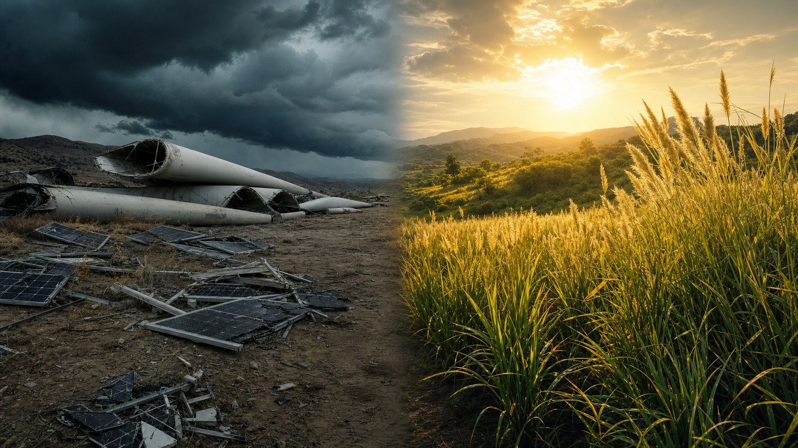

They already know it. And they’re not doing it.
Why your tax money goes to hail damage, while the solution is already on the shelf. Away with wind turbines and solar cells — trust what nature can already do.
By Jacobus van Merksteijn · Malta · 17 July 2026

The price that nobody mentions
Ask any minister how much money the world spent on "climate" in 2024. They don’t know off the top of their head. The answer: $ 2,400 billion. That is more than the GDP of all France. In one year. For wind turbines and solar panels that will be on the scrap heap in twenty years.
Meanwhile, global CO2 emissions in 2024 did not fall. They rose, by 0.8 percent. Source: Copernicus Global Carbon Budget 2024. Official. Peer-reviewed. Published.
Two point four trillion dollars. Emissions up. This is not failure — this is policy.
What you won’t hear on the NOS Journaal
In 2024, $ 2.8 billion worth of solar panels was destroyed by hail. Figure from DNV Energy Systems, the world’s largest insurer of energy infrastructure. Total weather damage to solar parks: $ 50 billion a year. Next year it will be more, because the climate change we are supposedly fighting makes hail larger. Peer-reviewed research (PMC iScience 2025) shows that 10 cm hailstones are becoming the new normal. Existing solar panels are certified only up to 2.5–7.5 cm.
The entire global rollout is being smashed to pieces by the weather.
Wind turbine blades are composite material that cannot be recycled. Each blade: 60 meters long, 20 tons. Lifespan: 20–25 years. According to the industry federation WindEurope, Europe alone will generate 14,000 blades a year by 2030. Where do they go? To landfill. Wyoming has set up special "windmill graveyards".
And shipping? Maersk is investing $ 17.4 billion in "green methanol" ships. The fuel is produced in factories costing $ 2 billion each (SunGas Louisiana), which produce 400,000 tons of methanol per plant. Six such factories cost $ 9 billion together and produce 13 TWh of energy a year in total.
By comparison: global shipping uses 2,500 TWh a year. So 1,150 SunGas plants are needed. Total cost: $ 1,700 billion. For shipping only. Just to make methanol.
The numbers nobody summarizes
$ 2,400 bn
global climate investment 2024 — more than France’s GDP
+0.8 %
increase in global CO2 emissions 2024 (Copernicus)
$ 50 bn/yr
weather damage to solar parks (DNV) — $ 2.8 bn from hail alone in 2024
14,000 blades/yr
wind turbine blades that will go to landfill in Europe by 2030 (WindEurope)
Sources: BloombergNEF Energy Transition Investment Trends 2025, Copernicus, DNV, WindEurope.
What IS there
There is a grass-like plant, developed in the 1980s by the Chinese scientist Lin Zhanxi (FAFU University, documented by the UN SDG Programme). It grows on poor, saline, semi-arid soil. 425 tons of biomass per hectare per year. Without fertilizer. With minimal water. Already proven in China, Mauritania, South Africa, Fiji, Papua New Guinea on tens of thousands of hectares.
From that biomass — using commercially proven, peer-reviewed technology in which Dutch companies such as DSM-Firmenich and Corbion are world leaders — fuel can be made. And bioplastic. And aviation fuel. And permanent CO2 storage.
Several certification systems exist for this CO2 storage. The best known is Puro.earth (listed on Nasdaq since 2020, traded by Microsoft, Google, Stripe, Shopify — at €125 per ton). But a second system is in development that is gaining broad international support, with involvement from the UN, developing countries and providers such as you and me. It is not aimed at individual corporate certificates for big tech companies, but at collective, verifiable CO2 accounting that is fairly distributed between producer and client. More on that in later editions.
Expected permanence: more than 95 percent after 100 years. Peer-reviewed. Physically explicable. Waiting for the right institutional architecture.
The calculation anyone can do
Take your calculator.
- Total global desert margins: 16,650 km long (Sahel, Sahara, Arabia, Gobi, Kalahari, Namib, Atacama, Patagonia, Caatinga)
- Available arid land: 2,362 million hectares (source: FAO Global Land Cover)
- To replace all the world’s oil for transport and heating and to remove 35 gigatons of CO2 per year from the air: less than 20 percent of available arid land
- Cost per TWh of energy: 1/5 of SunGas methanol
- Cost per ton of CO2 avoided: 1/8 of Climeworks direct air capture (DAC)
By comparison. Climeworks — the Swiss “miracle company” into which Microsoft and Stripe have poured hundreds of millions — captures CO2 from the air for €600 per ton. The grass-like plant route: €65 per ton net, after deducting energy and material yields.
Yet Climeworks ended up on the cover of The Economist last year. And this plant did not.
The question nobody dares to ask
Why not?
Not because it is impossible. It is physically, technically, economically possible. Every component is in commercial use:
- Puro.earth proves that the market for permanent CO2 certificates works (since 2020)
- Nasdaq CORCX quotes the price every day
- Wageningen University has been studying Juncao since 2015
- Corbion and NatureWorks produce PLA bioplastic at industrial scale
- Praj Industries has SAF conversion commercially
- DSM-Firmenich has the fermentation technology
Every piece of the puzzle exists. What is missing is the political will to fit the pieces together.
Who benefits from the current path?
| Lobby / organisation | Members / size | Annual revenue or support |
|---|---|---|
| Solar Power Europe | 350 members | € 90 bn/yr |
| WindEurope | 500 members | € 70 bn/yr |
| Hydrogen Europe | subsidised via the EU Green Deal | € 600 bn |
| European Battery Alliance | state aid since 2018 | € 100 bn |
| McKinsey, BCG, Boston Consulting | advise governments | billions per year |
| Grass-like plant on desert soil | nobody | € 0 |
That is exactly the problem. Who lobbies for a plant that grows on its own? Nobody — because nobody gets rich from it as long as the plant is not embedded in a patented supply chain.
What the established media will not write
That the current climate strategy systematically shifts money from taxpayers to shareholders of well-connected companies. That every solar panel destroyed by hail is insured — you pay the premium through your energy bill. That every wind turbine blade that ends up in landfill is subsidized with SDE money — your tax money. That the European ETS emissions trading system has raised €150 billion in twelve years, of which less than 15 percent went to CO2 removal.
The rest went to administration. To consultants. To bureaucracy.
What you can do — today, this week
1Call your pension fund.
ABP. PFZW. PMT. Ask, verbatim:
"Are my investments in solar panels insured against hail damage of 10 cm? What is the expected depreciation period? Why don’t you invest in Puro.earth CORC certificates that are traded on Nasdaq?"
Write down the answers. Publish them.
2Ask your member of the House of Representatives — in writing, so it is recorded.
"Why is the Netherlands subsidizing Climeworks technology (€600 per ton) through the ETS mechanisms, while proven alternatives are available at a fraction of that price? How much EU Green Deal money goes to hydrogen projects with a payback period of 40+ years? Why does the Netherlands have no serious Juncao research program, while Wageningen is a world leader in agri-biotechnology? And why is the Netherlands not involved in setting up a broader international certification system for biomass-linked CO2 storage — instead of relying on private American-Finnish platforms?"
3Investigate the CO2 certificate market itself.
Go to puro.earth. Read the methodology. Look at the price history on Nasdaq CORCX. Ask your bank why you cannot buy such certificates yourself. And ask: "is this the fairest market form, or is something better on the way?"
4Share this article.
If ten Dutch citizens a week put these questions to their pension fund, cracks will appear in the wall of self-evidence.
Closing line
Who says "this sounds too good to be true" — is right about the narrative form, and wrong about the physics. The figures in this article have been verified with IRENA, IEA, DNV, Copernicus, Puro.earth, Nasdaq, FAO, WindEurope. No conspiracy is needed to explain why the current path is being followed. Only interest is needed. And it is there.
Who claims that the science is "unclear" on all remaining open questions must explain why Microsoft, Google and Shopify are already buying hundreds of millions in permanent CO2-removal certificates today — and why the ordinary citizen cannot get in. They know something you are not allowed to know. And the private market they use is not the final form — a fairer system is on the way.
The arithmetic is here. The names are here. The amounts are here. What you do with it is up to you.
The silence that follows uncomfortable questions — that is the sound of a system that can no longer defend itself. So call. Ask. Publish what you get back. We are watching.
Sources
- DNV Energy Systems — Hail and solar PV plants
- iScience (PMC 2025) — Hail size and climate change
- WindEurope — Wind energy in Europe: Outlook to 2030
- BloombergNEF — Energy Transition Investment Trends 2025
- Copernicus Climate Change Service — Global Climate Highlights 2024
- UN SDG Partnerships — Juncao Technology (Lin Zhanxi, FAFU)
- Puro.earth — Permanent CO2 removal methodology
- Nasdaq — CORCX carbon-removal index
- FAO — Global Land Cover / arid lands
- European Commission — EU ETS emissions trading system
- Climeworks — Direct Air Capture
- SunGas Renewables — Louisiana methanol plant

Jacobus van Merksteijn
Malta
Publisher of Het Open Vizier. Systems designer and columnist. Works on projects at the intersection of public administration, sustainable energy and data-driven policy.